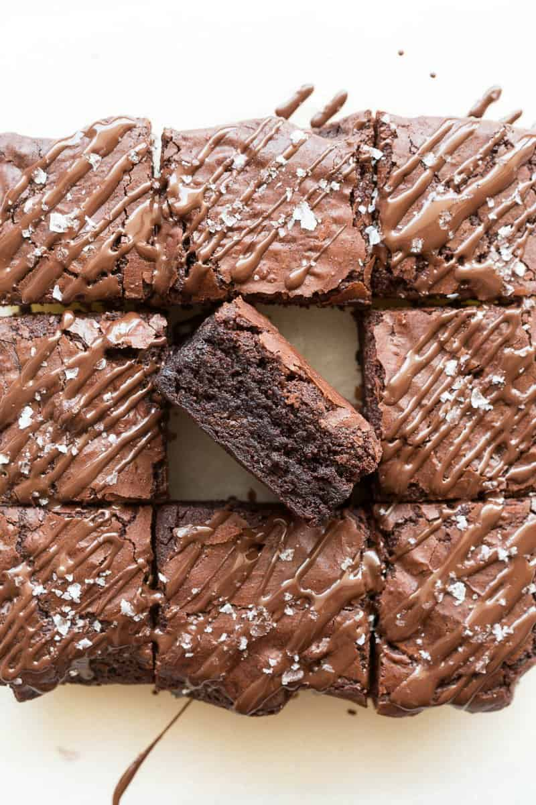

Why you’ll love this protein brownies recipe
What I love about these brownies is that they taste incredible and have the best fudgy texture -
everything you need in a healthy chocolate dessert!

Ingredients
- Almond butter
- Banana
- Cocoa powder
- Protein powder
- Salt
- Mix-ins. Optional, but I love to add some dark chocolate chips,
vanilla extract, or chopped dark chocolate.
How to cook
- Make the batter. Start by adding all your ingredients into a high-speed blender or food processor.
Blend the ingredients together until fully combined. If desired, add some chocolate chips.
You can also mix by hand in a large mixing bowl.
- Bake. Then, transfer the batter into a lined pan and bake for 15-20 minutes,
or until a skewer comes out ‘just’ clean. While the brownies are hot in the pan,
lightly press your hand over the top to form unnatural cracky tops.
- Cool then slice. Allow the brownies to cool in the pan completely before drizzling with chocolate and slicing them up.
How to store
- To store: Leftovers should be stored in the refrigerator, covered,
as they will spoil at room temperature. They will keep well for up to five days.
- To freeze: Place the brownies in an airtight container and store them in the freezer for up to 6 months.